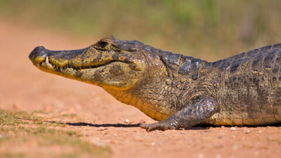

El Caimán es un reptil grande parecido al cocodrilo que vive en ríos y pantanos.

• Cuerpo fuerte y cubierto de escamas. • Mandíbulas muy poderosas. • Cola larga y musculosa. • Ojos y nariz en la parte superior de la cabeza. • Puede medir hasta 4 metros.
El caimán es un depredador carnívoro que se alimenta de peces, aves y otros animales.